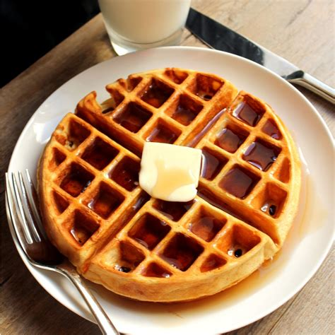

Waffles!

Description:
These are our go to waffles for a fun weekend breakfast. They have crispy edges, but are light and fluffy on the inside. Smothered with Maine maple syrup and butter is the ultimate way to go. You can easily add your favorite sweet or savory additions to get them just how you like.
Ingredients:
- 6 tablespoons unsalted butter, melted
- 245g all-purpose flour
- 15g sugar
- 8g baking powder
- 6g fine himalayan sea salt
- 3g baking soda
- 1 cup plain greek yogurt
- 1 1/4 cup buttermilk
- 4 large eggs
Preparation:
- In a large bowl combine dry ingredients and whisk.
In a separate bowl, combine wet ingredients and whisk.
Fold wet ingredients into the dry ingredients in the large bowl.
- Preheat waffle iron. Ligthtly coat with non-stick spray or butter if necessary.
Cook waffles using 3/4-1cup of batter at a time, depending on size of your waffle maker, until crisp and golden on the exterior.
Serve waffles immediately, or keep them warm at 175 degrees in the oven until ready to serve.